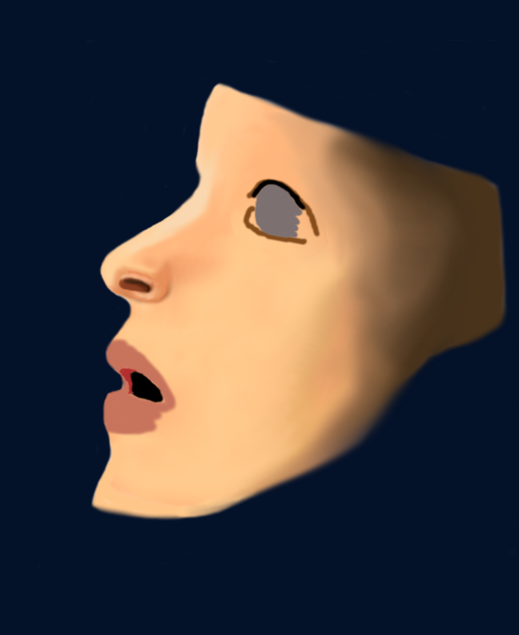
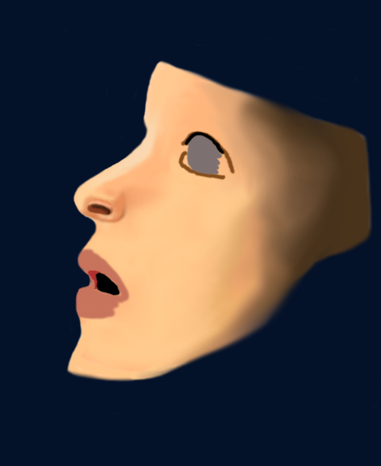

I haven't drawn since I was eleven! I was an aspiring artist in my early years drawing for hours on end, but I stopped for some odd reason.
I don't know why I stopped drawing, but one thing is for sure I had a passion for it. Over the years I felt this nagging like something was calling me to draw!
For some reason I didn't listen to that little still small voice telling me to draw. Years later I finally decided I would go back to drawing after seeing some
Artstation photos that inspired me. It was around Christmas when I decided to go back to drawing. For my New Years Resolution I decided that I was going to
learn to draw insanely realistic.
 

I'm going to...